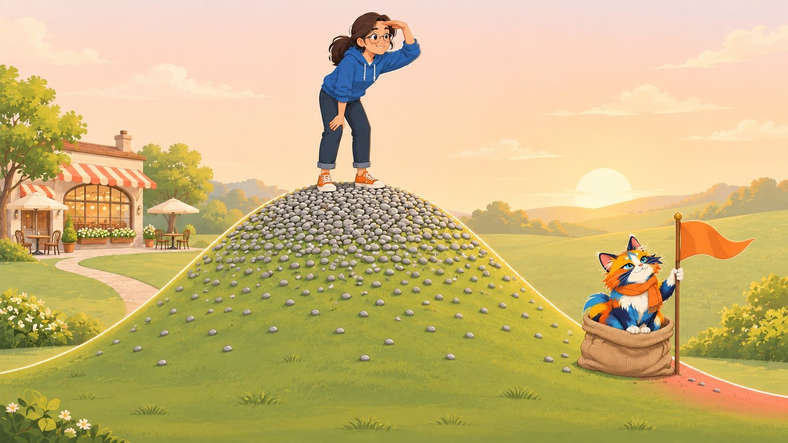
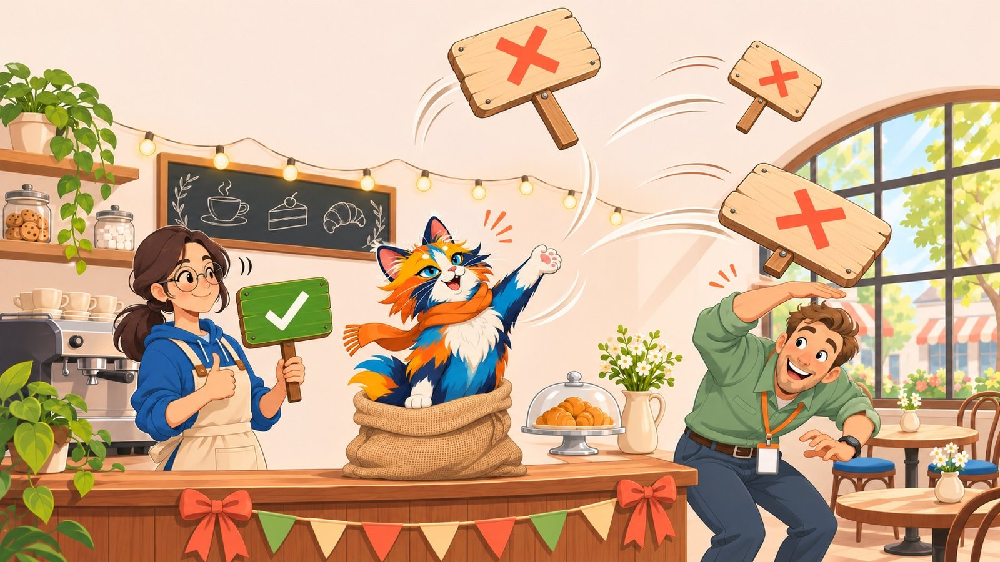
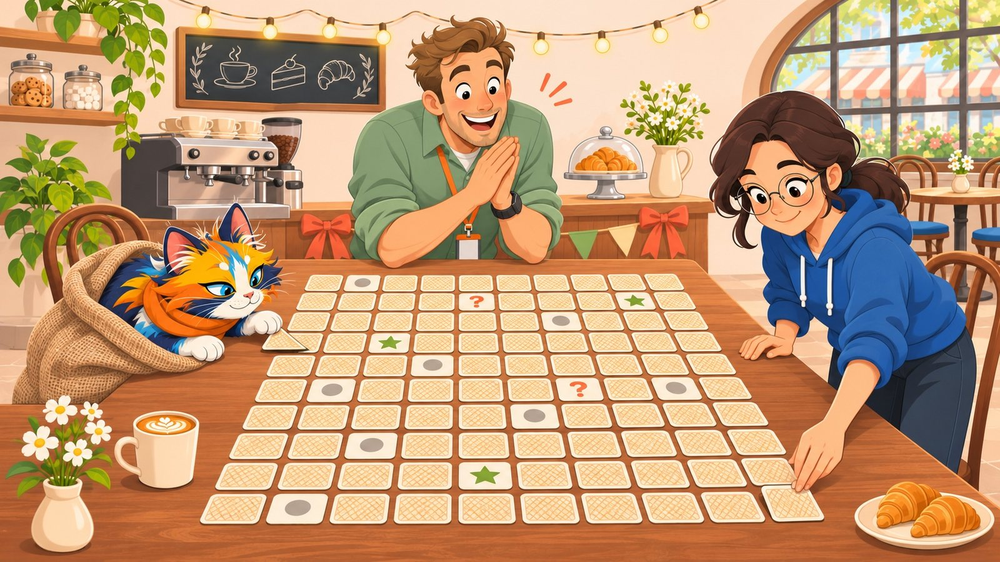

Шаг 7 из 10
p-value на пальцах

В шаге 3 мы видели: даже когда группы одинаковые, разница между ними не нулевая. Значит, про любую разницу хочется спросить: это эффект или обычный шум?
Трюк такой. Представим мир, где фича ничего не делает, и посмотрим, как часто в нём случается разница не меньше нашей. Если часто — наша разница ничем не примечательна. Если почти никогда — похоже, мы живём не в этом мире, и эффект есть.
Боб получил +3,1 %

Новая кнопка оплаты: в тесте заказов на 3,1 % больше. По 100 000 человек в группе. Это же явно не случайность?
Алиса предлагает проверить. Запустим много A/A-тестов с теми же 100 000 людьми в группе: в них кнопки нет, группы одинаковые. Как думаешь, в скольких A/A из 100 разница будет такой же или ещё больше, в любую сторону?
Выбери вариант.
Мир, где эффекта нет
Насыпь 1000 A/A-тестов: каждая точка — разница в одном из них. Флажок — разница Боба. Красным отмечены A/A, где разница не меньше, чем у Боба, в любую сторону. Флажок можно двигать.
Эта доля и есть p-value
Доля A/A-тестов, где разница не меньше нашей, называется p-value. Маленький p-value значит: в мире без эффекта такое случается редко.
Чтобы не спорить каждый раз, договорились о пороге: если p-value меньше 5 %, разницу называют значимой. На колоколе мира без эффекта это порог примерно в двух ширинах от нуля по обе стороны: всё, что дальше, случается там реже, чем в 5 случаях из 100. Порог увидишь на следующей карточке.
p-value и вилка — одно и то же
В шаге 6 мы называли разницу значимой, если вилка не задевает ноль. Сейчас — если p-value меньше 5 %. Это одно правило, только сказанное двумя способами. Двигай разницу и смотри на оба.
Крошечный эффект и огромный трафик
Пусть разница в эксперименте совсем маленькая: +0,5 %. Посмотри, что происходит с p-value, если людей становится всё больше.
Чем p-value не является

Читаем p-value
В отчёте p-value = 0,03. Что это значит?
p-value считается в мире без эффекта: как часто там случается разница не меньше нашей. Это редкость, поэтому разница значима. Но вероятность, что фича работает, он не сообщает.
Тест А: разница +0,2 %, p = 0,001. Тест Б: разница +3 %, p = 0,04. У какого теста эффект больше?
Маленький p-value у теста А — заслуга огромного трафика, а не большого эффекта. Значимы оба, а эффект больше у Б.
p-value = 0,25. Боб: «Фича не работает, выключаем». Что не так?
Большой p-value говорит только, что разница не удивительна для мира без эффекта. Возможно, эффекта и правда нет, а возможно, людей не хватило. Смотрим на вилку: насколько большой эффект она ещё допускает.
Насколько удивительна разница
- p-value — как часто в мире без эффекта случается разница не меньше нашей.
- Меньше 5 % — разницу называют значимой. Это то же самое, что вилка не задевает ноль.
- p-value — не вероятность, что фича не работает, и не размер эффекта.
- При огромном трафике значимым становится и крошечный эффект. Важен ли он — решает вилка и бизнес.
Теперь у того, что мы сделали руками, есть названия:
- p-value
- доля экспериментов без эффекта, где разница не меньше нашей
- Уровень значимости
- порог для p-value, обычно 5 %; ниже порога разница «значима»

Дальше, шаг 8: порог в 5 % иногда ошибается. Как часто мы будем выкатывать пустые фичи и пропускать хорошие — на игре из ста экспериментов.